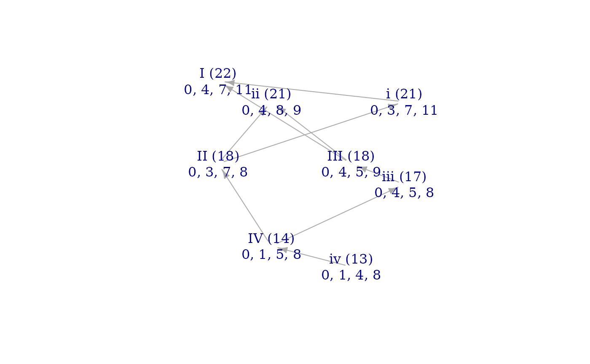
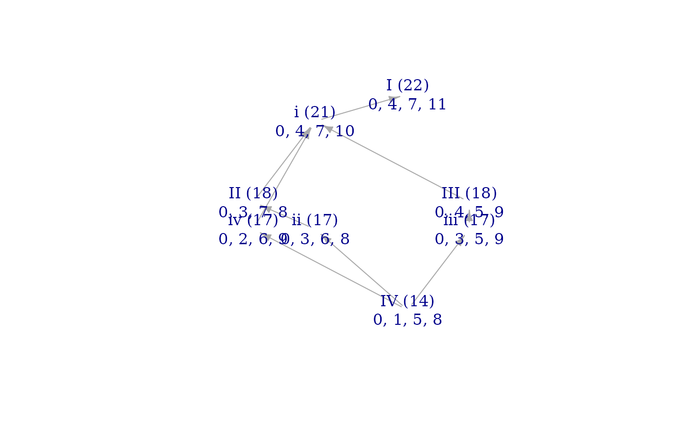

Often, the elementary voice leadings of a set (given by vlsig()) can be broken
into two intermediate voice leadings through a different set (i.e. ones given by
inter_vlsig() with some suitable choice of goal). A classic exmaple is the voice
leading (0, 1, 2) that takes C major (C, E, G) to F major (C, F, A). This voice leading
is elementary for major triads, but it can be decomposed into the succession of Neo-Riemannian
voice leadings R-then-L by passing through a minor triad. Such decompositions are not always
possible, though: given a choice of set and goal classes, sometimes the elementary path
from one mode of set to another does not pass through any mode of goal. Such a voice
leading is "monochrome" in the sense that it uses the restricted palette of the modes of a single
set.
Arguments
- set
Numeric vector of pitch-classes in the set
- goal
For
inter_vlsig()only, vector of the transposition type to voice lead to. Defaults toNULL, producing voice leadings to the inversion ofset.- bool
Should the result be a Boolean
TRUE/FALSEvalue? Defaults toFALSE.- display_digits
Integer: how many digits to display when naming any non-integral interval sizes. Defaults to 2.
- edo
Number of unit steps in an octave. Defaults to
12.- rounder
Numeric (expected integer), defaults to
10: number of decimal places to round to when testing for equality.
Value
If bool=FALSE, a voice-leading matrix formatted after inter_vlsig(). If bool=TRUE,
a single Boolean value indicating whether any monochrome voice leadings exist for set and
goal.
Examples
maj7 <- c(0, 4, 7, 11)
mM7 <- c(0, 3, 7, 11)
# Just a few basic transformations lead between these seventh chords:
inter_vlsig(maj7, mM7)
#> [,1] [,2] [,3] [,4]
#> [1,] 1 0 1 1
#> [2,] 3 0 0 0
inter_vlsig(mM7, maj7)
#> [,1] [,2] [,3] [,4]
#> [1,] 0 1 0 0
# But we can see from their brightness graph that modes III and I of maj7
# have no intermediate voice leading that involves the minor-major seventh:
brightnessgraph(maj7, mM7)

# monochrome_vl detects this voice leading:
monochrome_vl(maj7, mM7)
#> [,1] [,2] [,3] [,4]
#> [1,] 2 2 0 0
# Note that the equivalent does not apply to minor-major seventh, which always
# has some mode of the major 7th chord decomposing its elementary voice leadings:
monochrome_vl(mM7, maj7)
#> [,1] [,2] [,3] [,4]
# Finally, note that the presence of monochrome voice leadings is dependent on
# the pair of chord types you choose, not simply the "set." For instance, we can define
# a chord that will decompose the voice leading from mode III to mode I of the major 7th:
dom7 <- c(0, 4, 7, 10)
monochrome_vl(maj7, dom7)
#> [,1] [,2] [,3] [,4]
brightnessgraph(maj7, dom7)
